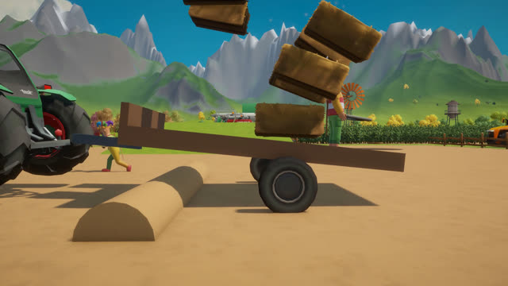
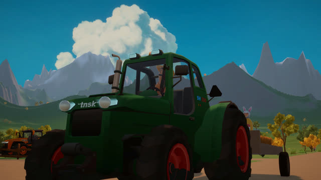
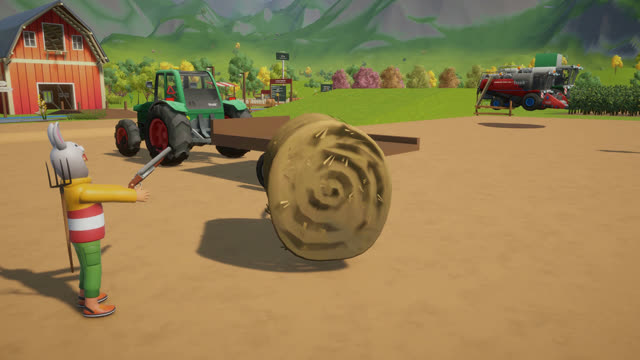
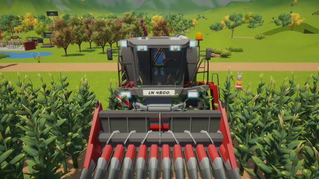
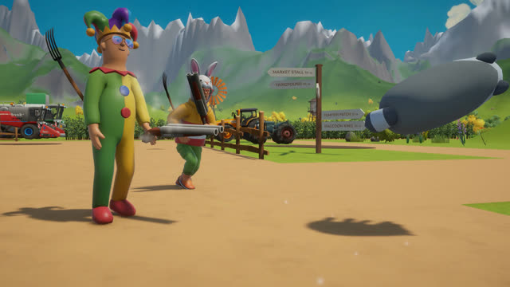
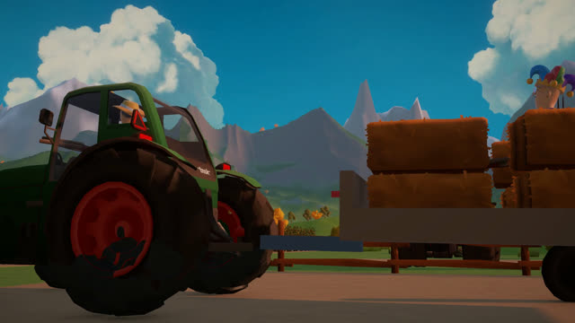
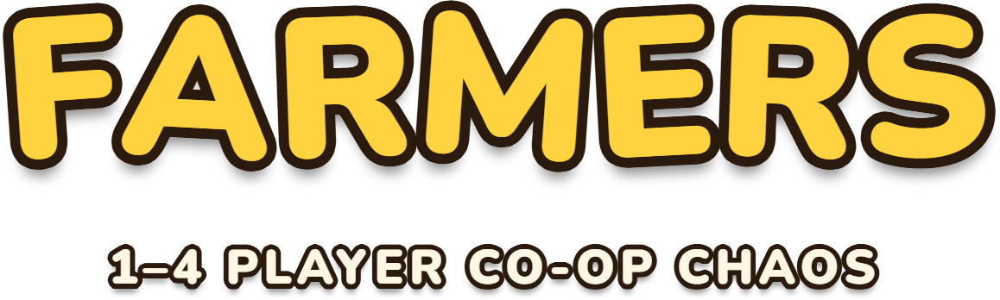
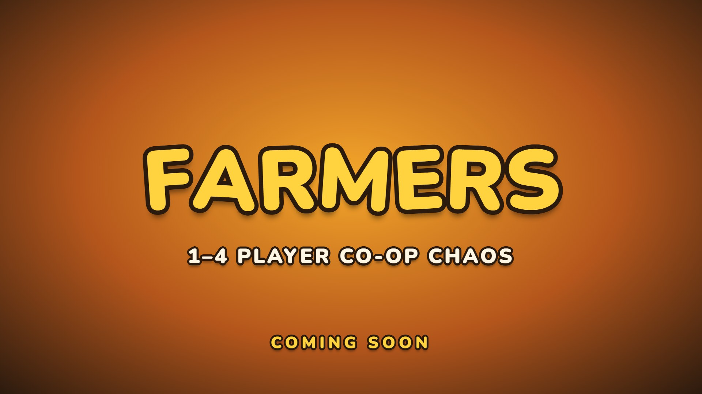
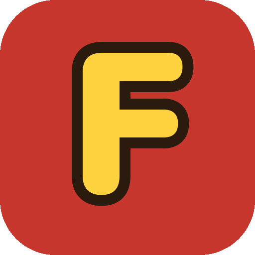

Farmers
Everything you need to write about Farmers. All screenshots and logos are free to use in coverage of the game.
In one line
Farmers is a 1–4 player co-op physics farming game: four friends, one farm, and one very wobbly trailer.
Description
Harvest hay, corn, potatoes and pumpkins, stack it all on a hitched flatbed, and drive it to the market without dropping it — then do it again tomorrow. Every bale, cob, pig and farmer is a physics object, so the work goes wrong in new ways every day: loads slide off at bumps, round bales roll downhill into your friends, and raccoons team up to carry off the harvest.
The crew shares one wallet and one catalogue of upgrades: bigger tractors, combines, a potato harvester, livestock, land, and gadgets like the Egg Slingshot, the Lasso and the Rubber Chicken. When you're ready, ring the dinner bell and the Raccoon King rolls up in a shopping cart to tow your trailer away. There's no quota and no game over.
Features
- 1–4 player online co-op; solo is the same game.
- Four farm jobs: Bale Out!, Maize Craze, Hog Wild and Spud Rush.
- A fully physical farm: two-farmer lifts, trick shots, ragdoll knockdowns, riding on the load.
- Tractors, combines and a potato harvester that wear out, leak oil and break down.
- Thieves: hay-stealing raccoons, Kernel Crows, Gus the Goose and the Raccoon King boss.
- A fairground with the Greased Pig, Hay Bale Bowling and the Bale Tower.
- Livestock, pumpkins, mud, day and night, weeks and a Farm Level.
- End-of-day awards, feats, emotes, pings and a wardrobe of daft outfits.
- Ten farm maps.
Trailer
Download the trailer (MP4, 1920×1080, 0:53)
Screenshots
1920×1080 PNG, captured in-game. Click to download.


Bales flying Stacked trailer
Stacked trailer
 The crew
The crew
 Farm overview
Farm overview


Tractor

Round bale Special delivery
Special delivery


Combine

Raccoon chase Gus the Goose
Gus the Goose
 Mud
Mud
 Hay Bale Bowling
Hay Bale Bowling
 Greased Pig
Greased Pig
 Bale Tower
Bale Tower
 Raccoon King
Raccoon King
 King down
King down


Sunset haulLogos & icon


Logo with tagline (PNG, transparent) Wordmark (PNG, transparent)


Logo card (1920×1080)

Icon (512×512)About Pixel Studio
A small independent studio. We make cosy games with more going on under the hood than the art lets on. Our first game is Santa's Legacy, a cosy Christmas idle game about running the North Pole.